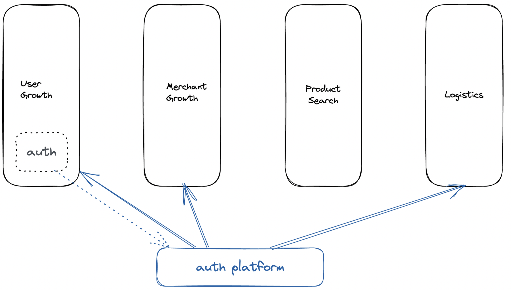

A PoD structure enables cross functional teams, that is, teams that comprise of different specialisations like engineer, product manager, data scientist etc to work independently and execute on a business goal without dependencies on other teams. This type of structure increases the execution speed but is not without risks. Some of these that I have encountered are -
Division of work
The key to executing fast is independence in decision-making for the area of work, and not having to wait on other teams to complete a team’s work. So the biggest risk to succeeding with this kind of a team structure is that dividing up work that makes teams step on each others’ toes and have dependencies on other teams to complete their goals. For a small company, this isn’t really hard to do, but for larger groups, you have to work hard to maintain independence. A mistake here renders the whole structure useless.
If you were to draw a planner for each team, ideally independent team plans should look like this.
However, plans may end up looking like below, and this nullifies the structural benefits completely.
Leadership in a Decentralised Organisation
Decentralised structures relieve leaders of short term and tactical decision making. Once decision making is distributed, a general manager’s role looks redundant, and many leaders fail to adapt to this new system which needs them to flex a different muscle. A leader in a decentralised structure should be focusing on identifying and governing over the right rituals, find out internal product and platform building opportunities, focus and play on prioritisation, and manage inter team dependencies and efforts that may be needed, ranging from platform building to recruitment strategy. Essentially, the decisions a leader makes are focused on longer term success of the company, and a leader who is used to or addicted to dealing with quick short term decision-making feels disempowered and ineffective.
Repeated and common work
Independent teams can end up doing a lot of similar work, creating similar things and perhaps even engaging different vendors for the same solution. Initially this is fine and even better than to seek common opportunities to build, since this makes teams work towards specialisation on their objectives, however in as code bases and teams grow, making necessary org-wide changes become very costly.
One solution is to create product and engineering platform teams, which has to be carefully done as well, otherwise interdependencies on platform teams crop up slow product teams down. The trick here is to incubate a platform team within a product team first, and then behave like a SaaS vendor.

Functional Growth and Learning
Traditionally in functional structures, people report to someone from their specialisation and this is what they may miss, this is a major risk because general managers tend to overindex on execution skills and may underplay technical expertise, thus favouring short term over long term outcomes that need expertise. An engineer or a data scientist reporting to a product manager, or a product manager reporting to an engineering manager may feel that they are not supported functionally.
Dual reporting
Having functional and execution leaders to solve for some of the risks above introduces a compound problem, a lack of clarity on who a person reports to, who will set their goals and help achieve them. Unless done well, dual reporting structures may muddy the waters and create serious communication problems, as goals for a person are set by one person and their team is lead and managed by another.
Glue Roles
Two risks that combine together to create slow death of a driven culture are poor division of work and sticking to functional leadership, which leads to overworked and tactical leaders. The generally accepted solution is an even bigger risk - addition of glue roles like program managers and middle managers to help in accountability of work across teams and even execution of cross team programs. Glue roles generally have very low customer focused thinking involved, and therefore their levers and compromises in decision making are quite different.
Focus on indirect responsibilities
Sometimes this kind of structure reduces ownership and focus of individuals and middle managers in areas like performance and uptime, security, recruitment etc. This also highlights increased responsibilities of all levels of leaders, and individuals in a decentralised structure, Peter Parker principal applies and yet is oft forgotten.